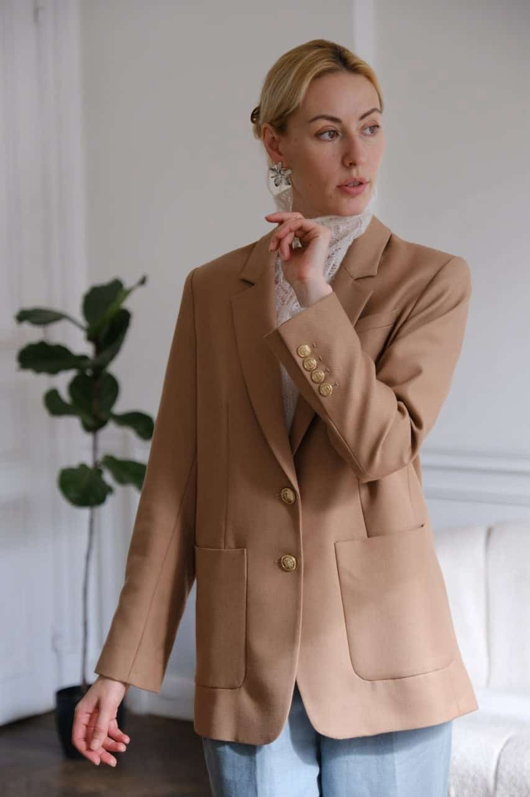
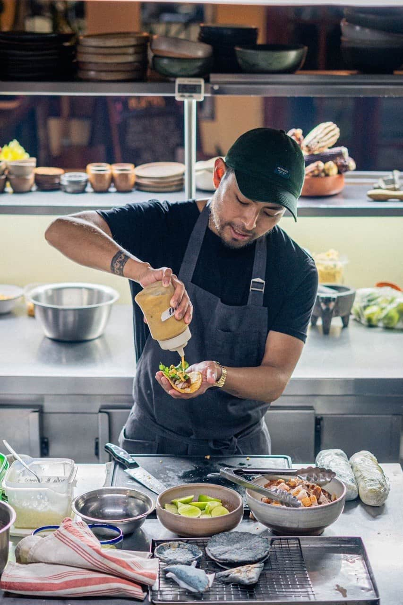
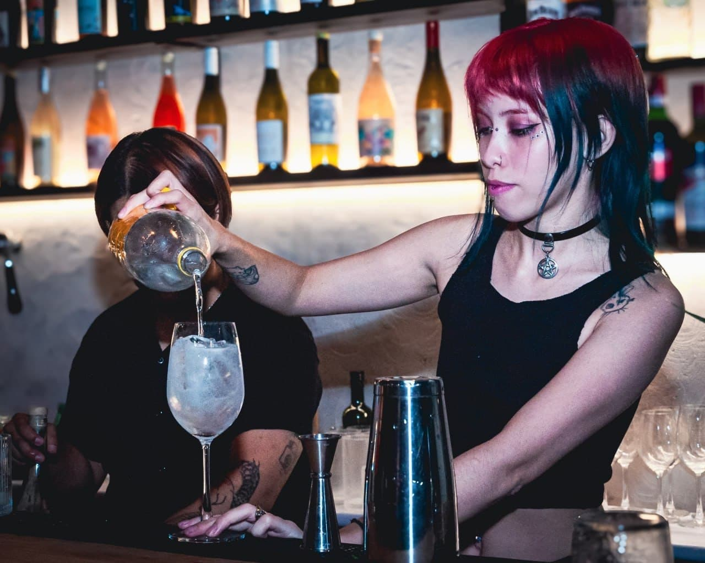
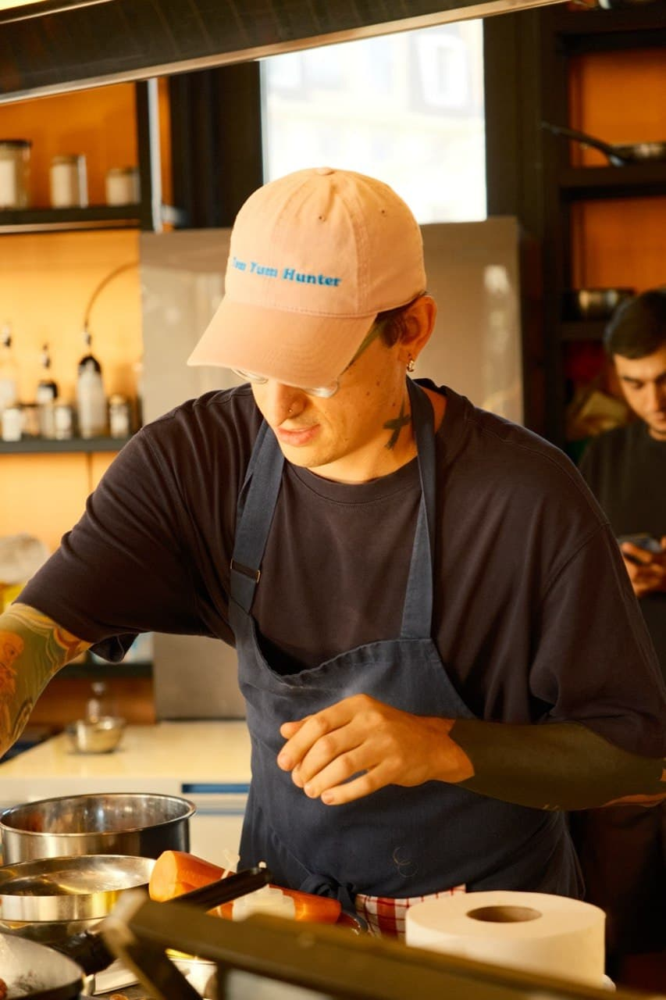
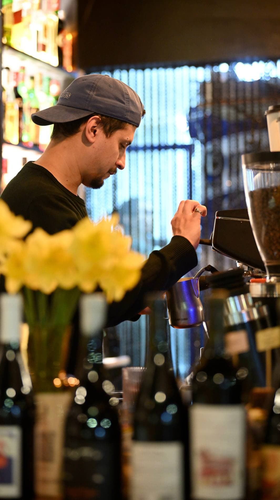
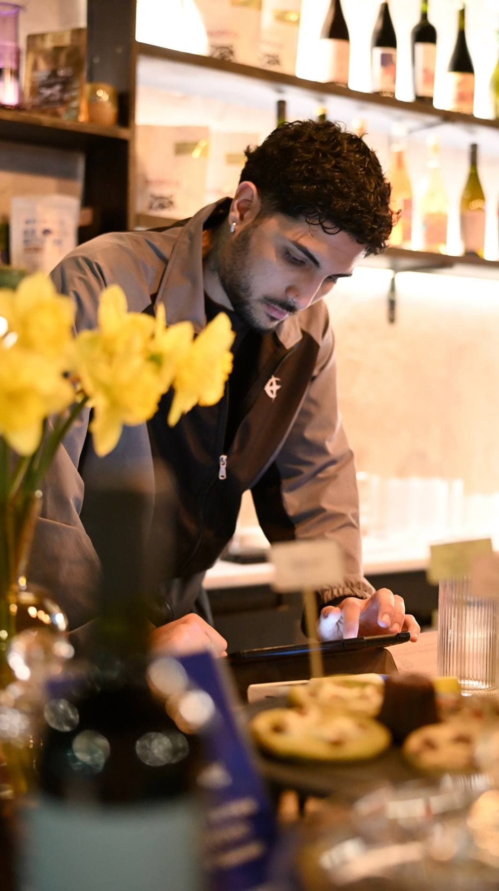

Conocimiento real del mercado
Conozco la gastronomía argentina desde adentro —tengo un café-bar en Buenos Aires— y puedo elegir candidatos que encajen de verdad con tu cultura.
Consultoría de RR. HH. · Buenos Aires
Selección profesional de personal para bares, cafeterías y restaurantes. Trabajo como tu socia de confianza: entiendo cómo funciona un local por dentro y conozco el mercado argentino.
Buenos Aires Más de 15 años en RR. HH. Hasta 30 días de garantía

15+ años
seleccionando y gestionando equipos
Corporaciones
y startups
Rostelecom, Rosneft y equipos jóvenes
Mi café-bar
en Buenos Aires: conozco la cocina desde adentro
30 días
de garantía de reemplazo; 14 en el paquete básico

¿Nos conocemos?
Tengo más de 15 años de experiencia en RR. HH., tanto en grandes corporaciones —Rostelecom y Rosneft— como en startups.
Me especializo en seleccionar personal para perfiles muy distintos, en definir con precisión el perfil de cada candidato y en llevar adelante entrevistas efectivas.
Mi formación en gestión de personal en la Universidad RUDN me da una comprensión profunda de todos los aspectos de RR. HH., y eso ayuda a tu negocio a encontrar a los mejores.
Conozco la gastronomía argentina desde adentro —tengo un café-bar en Buenos Aires— y puedo elegir candidatos que encajen de verdad con tu cultura.
No te mando currículums sin más: selecciono con criterio, entrevisto yo misma y respondo por la calidad.
Te asesoro en gestión de personal, en la incorporación y en cómo retener a tu equipo.
Cuatro áreas del local para las que busco gente. Cada una pide otro ritmo y otro carácter.




Paquetes y tarifas
Cuanto más compleja es la necesidad, más adentro de tu equipo entro. Podés empezar por cualquier escalón.
1
150 USD
Para una posición de personal de línea: ayudantes de cocina, mozos y bartenders con experiencia básica.
2
350 USD
Para perfiles especializados: bartenders, baristas y encargados de salón, con requisitos de experiencia y servicio.
3
800–1200 USD
Búsqueda de 3 a 5 posiciones, con incorporación y checklists básicos para el personal.
4
1500–2000 USD
Acompañamiento completo: selección, incorporación, reglamentos, instructivos y asesoramiento al dueño.
Precios en dólares estadounidenses. Abajo, cómo es el trabajo en cualquiera de los paquetes.
Otros servicios
Estos trabajos se pueden tomar por separado o sumar a cualquiera de los paquetes.
desde 150 USD
Apertura y cierre, recepción de mercadería, higiene y estándares de servicio: en hojas con las que una persona nueva puede trabajar desde el primer día.
desde 300 USD
Descripciones de puesto y reglamentos de trabajo a medida de tu local: quién hace qué en el turno, cómo se pasan las tareas, qué hacer cuando algo se cruza.
desde 450 USD
Un solo lugar con los reglamentos, los checklists, el material de capacitación y los contactos. Se abre con un enlace, desde el celular, sin instalar nada.
Los tres juntos: desde 800 USD. Por separado serían 900.
Precios en dólares estadounidenses. El monto exacto depende del tamaño del local y de la cantidad de puestos: te lo digo cuando me contés la necesidad.
Cómo trabajo
Garantía de reemplazo. Si la persona no encaja, busco un reemplazo: 14 días en la búsqueda básica y 30 días en todos los demás paquetes.
Definimos a quién necesitás: tareas, horarios, experiencia y nivel de servicio.
Salgo a buscar activamente, no espero que lleguen postulaciones.
Entrevisto yo misma y descarto a quienes no encajan con tu equipo.
Te paso los finalistas con mi comentario sobre cada uno.
Preguntas frecuentes
Desde 150 USD por una posición de línea hasta 1500–2000 USD por RR. HH. llave en mano. Los cuatro paquetes con sus precios están en «Tarifas».
50% de anticipo y el resto al entregar. Todos los precios de la página están en dólares estadounidenses.
Hay garantía de reemplazo: 14 días en la búsqueda básica y 30 días en los demás paquetes. Dentro de ese plazo busco otro candidato.
Cocineros, ayudantes de cocina, mozos, bartenders, baristas y encargados de salón: desde posiciones de línea con experiencia básica hasta perfiles con requisitos de servicio.
No reenvío currículums en serie. Entrevisto yo misma, elijo candidatos que encajen con la cultura de tu local y sigo disponible para el dueño en temas de incorporación y retención.
Escribime unas líneas sobre tu local y la posición: te respondo y te digo por qué paquete conviene empezar.